Chimp trekking in Kibale, boiling hot springs, crater lakes you can swim in, the Mountains of the Moon and a living kingdom — all from one cool, clean town in western Uganda.
Distances are measured from Fort Portal town, your perfect base for exploring western Uganda. Tap a category to filter.
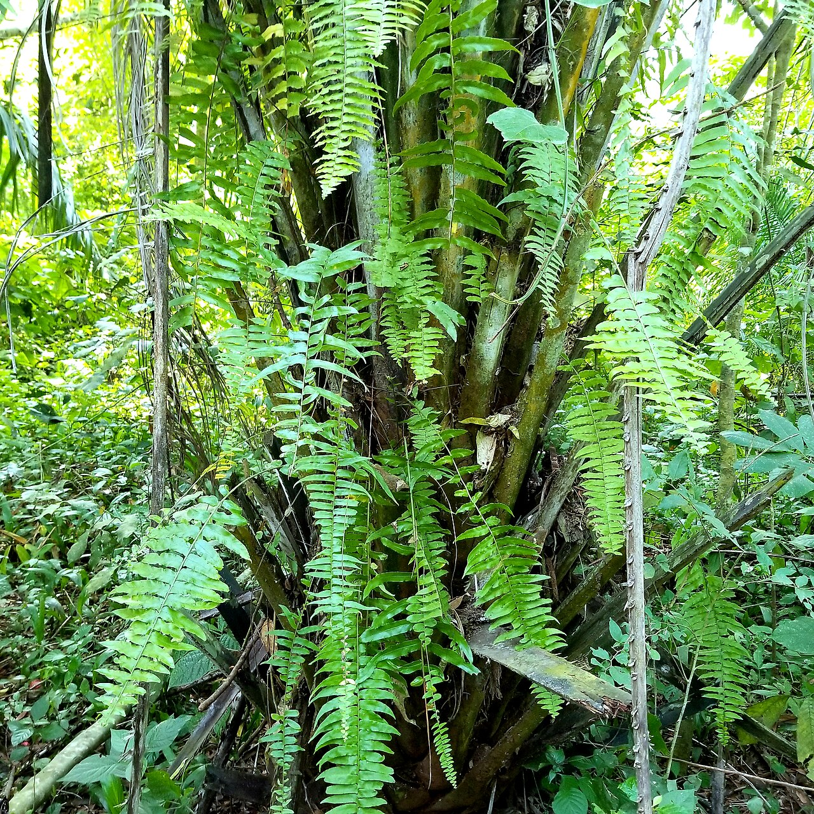
Game drives with elephants, buffalo and Uganda kobs, plus sweeping views over the Lake Albert escarpment.
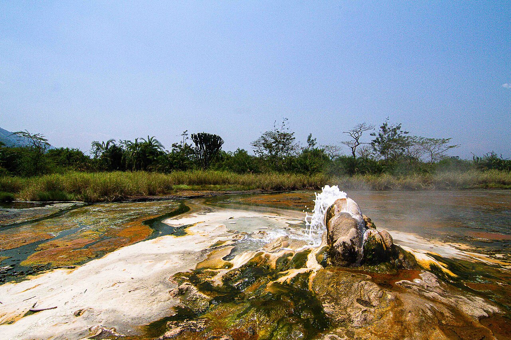
The male and female springs of Semuliki National Park. Water boils hot enough to cook eggs, deep in ancient Congo-basin forest.
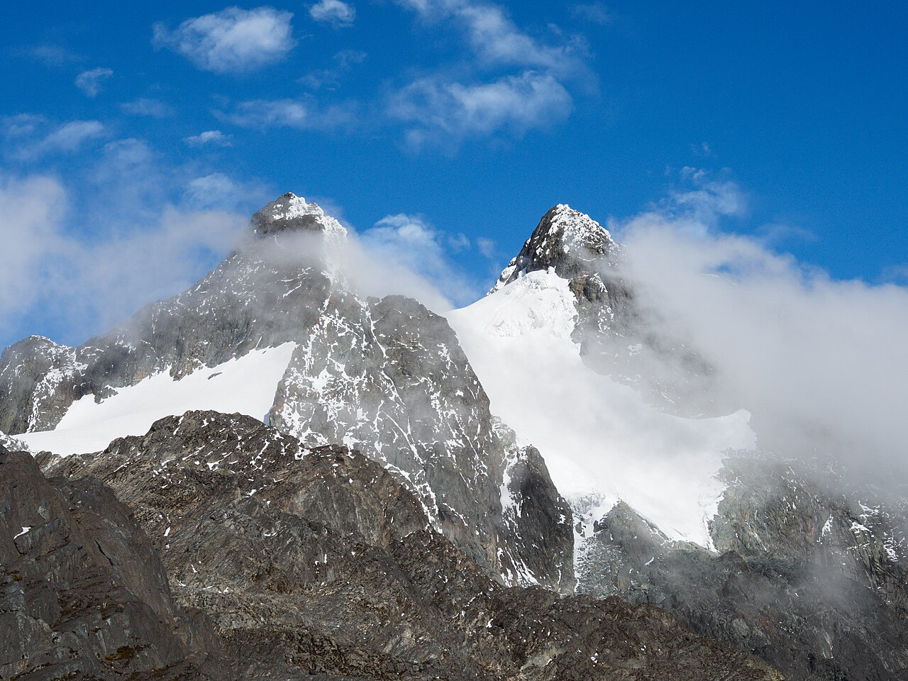
The legendary Mountains of the Moon. Day hikes to panoramic ridges or full treks to Margherita Peak, Africa's third highest summit.
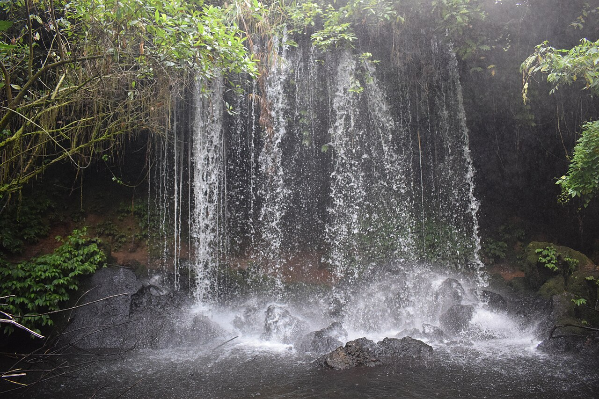
The famous Bachwezi legend caves at Nyakasura, with waterfalls, stalactites and three crater lakes on the walking trail.
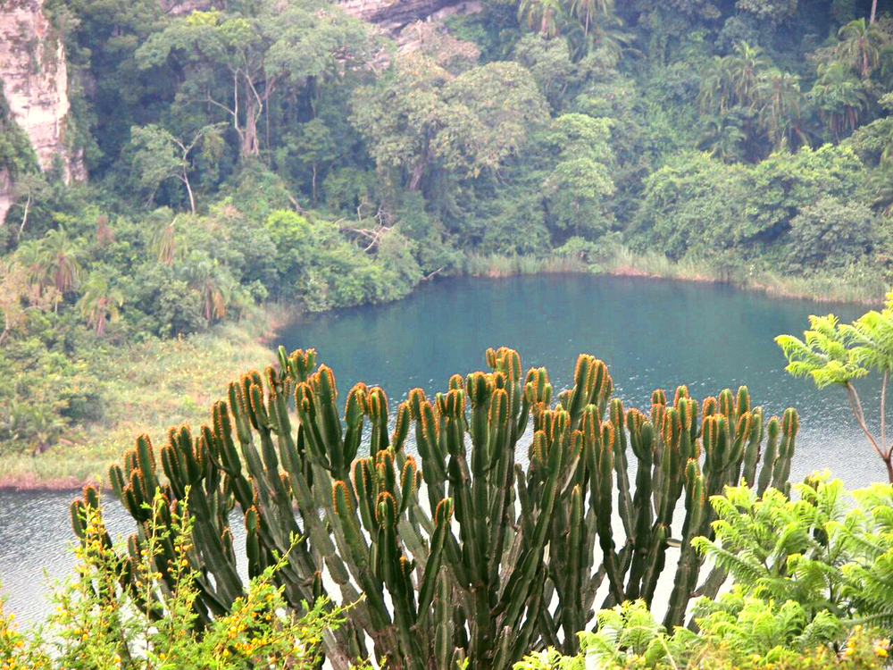
A deep blue crater lake perfect for a swim, a viewpoint walk or simply one of Tooro's most photographed views.
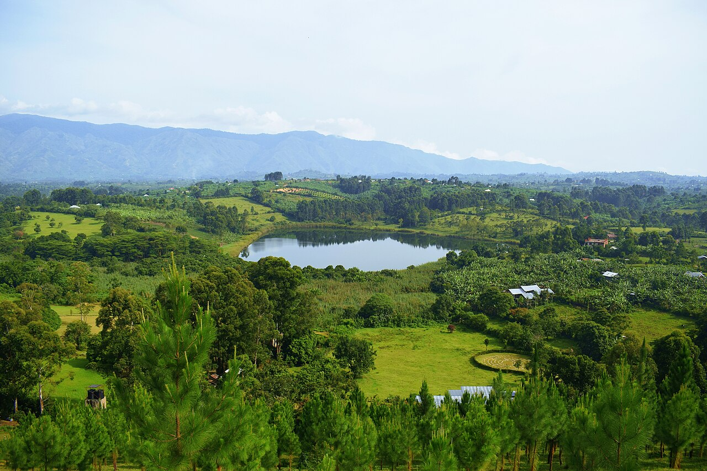
Dozens of crater lakes — Nkuruba, Nyabikere, Nyinambuga and more. Ride the "Top of the World" loop between town and Kibale.
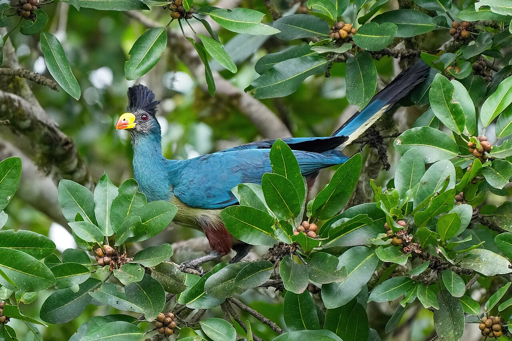
A community-run boardwalk famous for the Great Blue Turaco and over 200 bird species. One of Uganda's best birding spots.
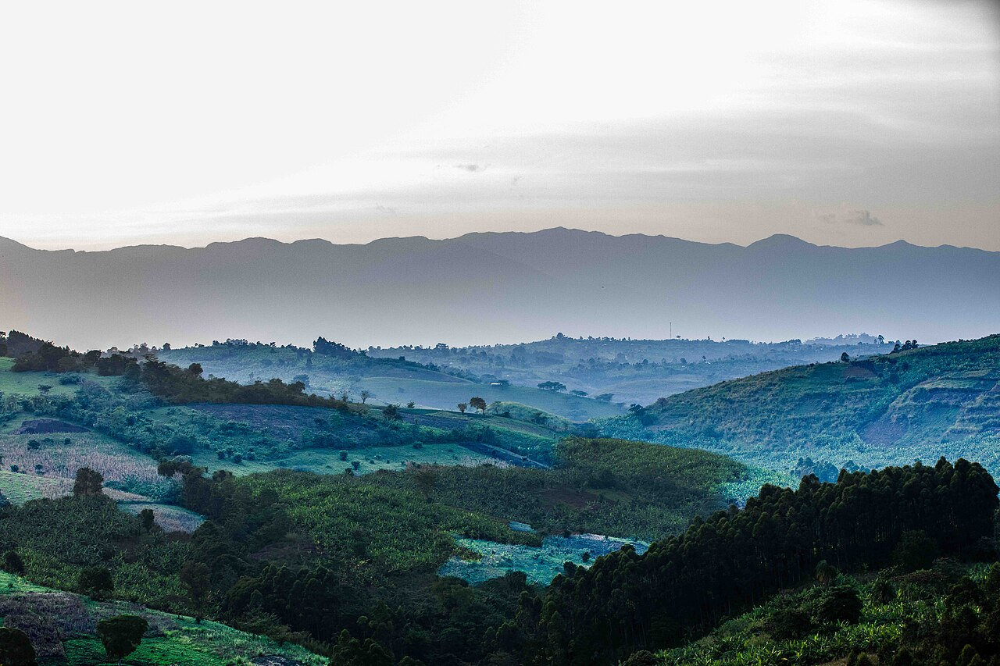
A beautiful waterfall tucked between the crater lakes on the road to Kibale. A rewarding short hike with a cool, misty reward at the end.
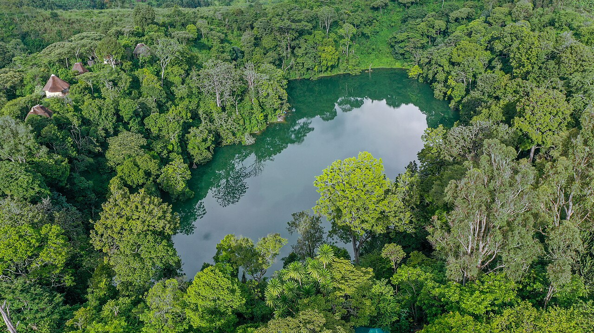
A community nature reserve around a crater lake — guided forest walks, monkeys, hornbills, swimming and camping by the water.
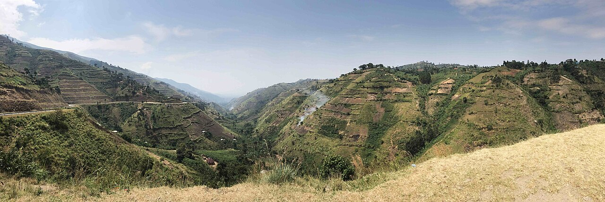
Stand on the escarpment edge and look across the Albertine Rift toward the Congo border, with fishing villages below at Ntoroko.
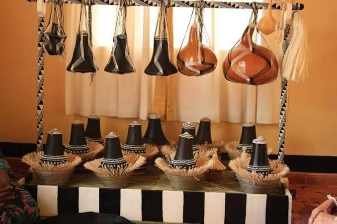
Hand-woven gourds, black-and-white patterned crafts and royal heirlooms show the artistry of the Tooro Kingdom. Experience the traditions of the Batooro people in Fort Portal.
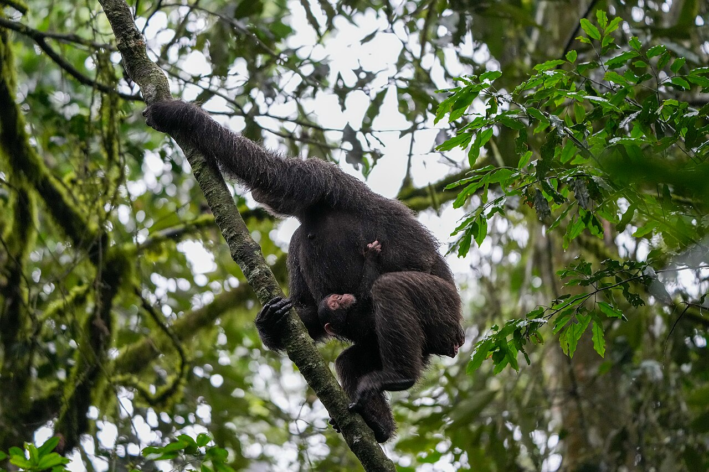
The chimp trekking capital of Africa, home to 13 primate species and over 375 birds. Treks run morning and afternoon; permits from UGX 180,000 for East Africans.
An affordable, spotless 26-room motel in the heart of Fort Portal, a short walk from the Tooro Kingdom Palace. Free breakfast and Wi-Fi, secure parking, restaurant and bar, 24/7 front desk, and 13 km from Kibale National Park. See rooms and rates or book direct for the best rate.
Fort Portal has everything from budget guesthouses to luxury lodges — but this local favourite keeps winning people over.
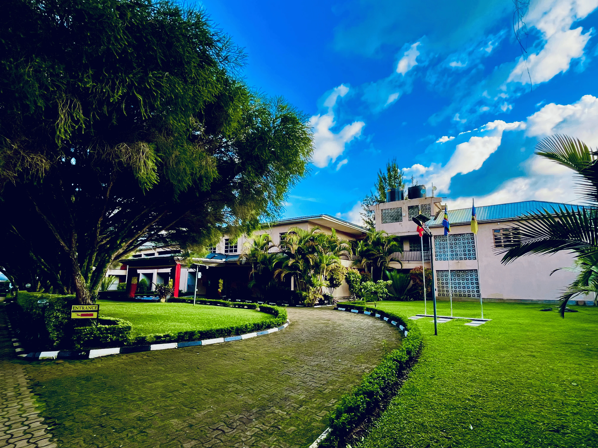
A long-standing local favourite rated 4.0 stars from 845 Google reviews. Beautiful gardens, a swimming pool open to day visitors, restaurant and conference facilities, on the Fort Portal–Kasese highway.
From chimp permits to crater lake tours, talk to a local team that knows Tooro.
Chat on WhatsAppPhotos: Wikimedia Commons contributors (G. Laurent and others), used with credit under Creative Commons licenses.